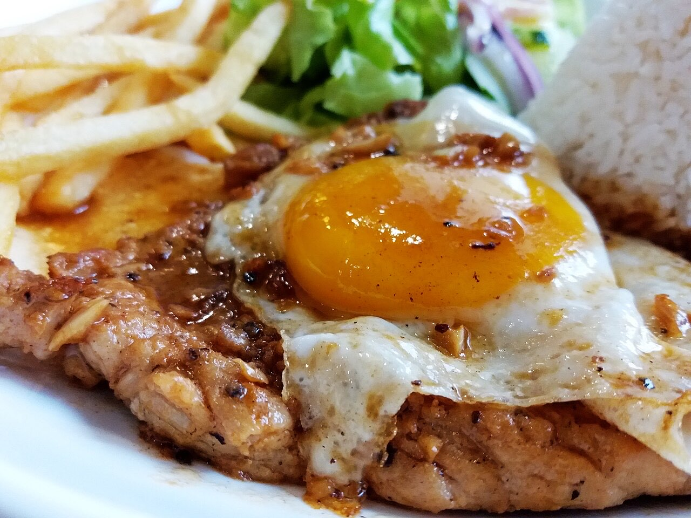
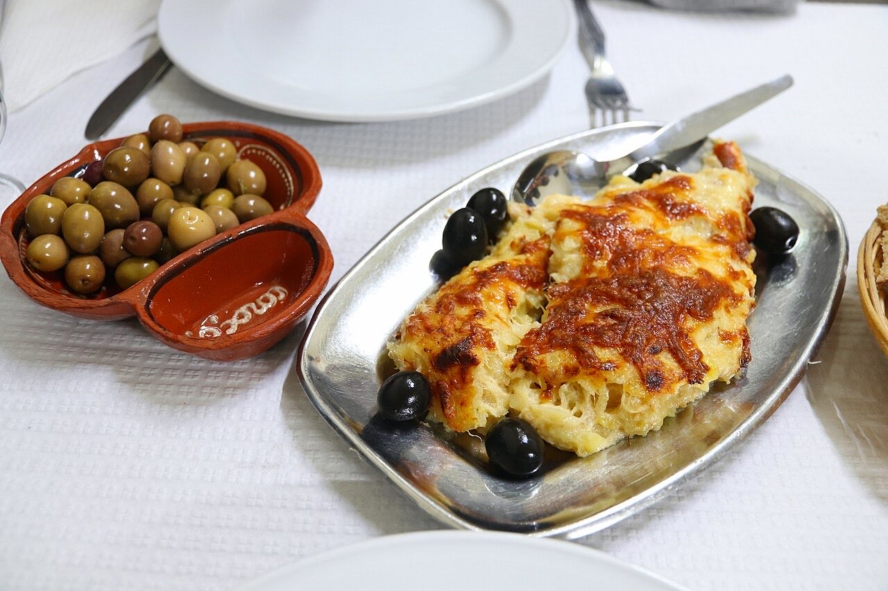

Fotografias ilustrativas — no site final usamos as vossas.
Almoços e jantares em Polvoreira.
Um café depois da refeição.
Rua Cmte. João de Paiva Faria Leite Brandão 632.
O Restaurante Café Rio fica na Rua Comandante João de Paiva Faria Leite Brandão, em Polvoreira. Venha almoçar, jantar ou tomar um café com tempo.


Fotografias ilustrativas — no site final usamos as vossas.
Pedido de reserva
Escolha o dia e a hora — o pedido chega por WhatsApp e confirmamos logo.
↑ Assim chegaria a mensagem ao vosso WhatsApp. (Nesta demonstração nada é enviado.)
Onde estamos
Proposta para Restaurante Café Rio
Esta página foi feita de propósito para Restaurante Café Rio por João Machado, programador web aqui de Guimarães. Inclui:
Eu trato do alojamento e da manutenção. Sem compromisso.